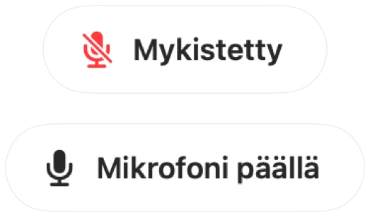

Macin mikrofonin mykistys pikanäppäimellä
macOS sisältää näppäimen sanelulle mutta ei mikrofonin mykistykselle. Jokaisella puhelusovelluksella on oma pikanäppäimensä, ja kukin toimii vain silloin, kun kyseinen sovellus on aktiivisena.
Muffle tuo yhden pikanäppäimen, joka mykistää itse mikrofonin kaikissa sovelluksissa kerralla. Oletus on Control-Option-M, ja voit valita minkä tahansa yhdistelmän.
Mykistä yhdellä pikanäppäimellä
- 1
Asenna Muffle.
- 2
Mykistä painamalla Control-Option-M. Valikkorivin kuvake muuttuu punaiseksi ja pieni vahvistus ”Mykistetty” tulee näkyviin.
- 3
Poista mykistys painamalla sitä uudelleen.
- 4
Jos haluat vaihtaa pikanäppäintä, avaa Muffle-asetukset, napsauta pikanäppäintä ja paina uutta.

- Kun mikrofoni on mykistetty, voit puhua pitämällä pikanäppäintä painettuna ja mykistää taas vapauttamalla sen.
- Napsauta Mufflen valikkorivikuvaketta hiiren kakkospainikkeella mykistääksesi heti hiirellä.
Kysymyksiä ja vastauksia
Toimiiko pikanäppäin, kun puhelusovellus ei ole aktiivisena?
Kyllä. Se toimii mistä tahansa sovelluksesta, myös koko näytön tilassa olevista sovelluksista.
Voinko käyttää yhtä yksittäistä näppäintä, kuten F5?
Kyllä. Funktionäppäimet toimivat yksinään; muut näppäimet vaativat Control-, Option- tai Komento-näppäimen.